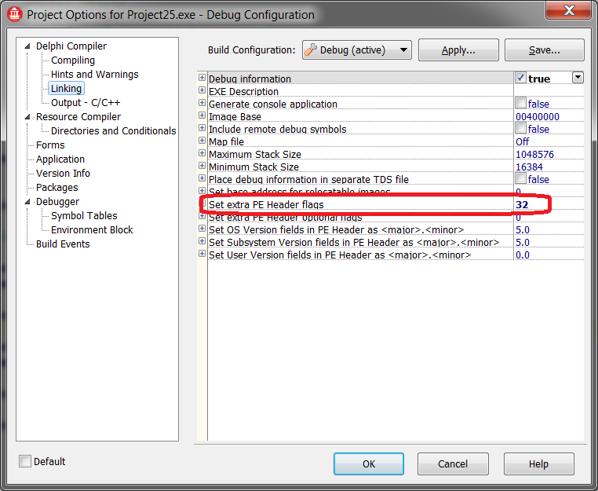
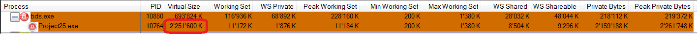

Миф №5: ключ /3GB расширяет пользовательское адресное пространство для всех программ
Ну, давайте включим режим /3GB и запустим нашу программу пример, где AllocMem выделяет 100 Мб. Будем нажимать на кнопку, пока не возникнет сообщение о нехватке памяти и посмотрим, сколько же памяти нам удалось выделить:
Как видим, это существенно меньше ожидаемых 3 Гб памяти.
На самом деле, режим /3GB влияет только на программы с флагом IMAGE_FILE_LARGE_ADDRESS_AWARE.
По соображениям совместимости, только программы, которые явно пометили себя, что они умеют обрабатывать виртуальное адресное пространство больше 2 Гб, получат большее адресное пространство. Не помеченные программы получат свои обычные 2 Гб, а адресное пространство между 2 Гб и 3 Гб не будет использоваться вовсе.
Почему?
Потому что слишком много программ предполагают, что старший бит адреса в пользовательском режиме всегда очищен (т.е. равен 0), часто делая это невольно. В MSDN есть страничка, на которой перечисленны несколько способов использования такого предположения. Например, вы можете захотеть найти средний адрес между двумя другими - используя для этого формулу (a + b) / 2. Но если a и b будут больше 2 Гб, то их сумма не влезет в 4-х байтное целое - следовательно, вы получите неверный результат (для верного вычисления надо использовать выражение a + (b - a) / 2). Соответственно, вы не можете просто взять программу, которую вы не писали, пометить её флагом IMAGE_FILE_LARGE_ADDRESS_AWARE и объявить, что дело сделано. Вам вместе с авторами программы надо проверить, что код не делает никаких предположений насчёт этих 2 Гб (а тот факт, что программа не была помечена, как совместимая с 3 Гб, означает, что никаких проверок не было сделано. В самом деле - в противном случае она была бы уже помечена флагом IMAGE_FILE_LARGE_ADDRESS_AWARE!).
Пометка вашей программы флагом IMAGE_FILE_LARGE_ADDRESS_AWARE указывает операционной системе: "давай, дай мне доступ к этой дополнительной памяти пользовательского адресного пространства", в результате адреса выше 2-х Гб становятся возможными возвращаемыми значениями в функциях выделения памяти. Если вы установите флаг "Top down" в предпочтениях менеджера памяти, вы можете указать менеджеру памяти выделять память сначала по старшим адресам, таким образом, вы заставите свою программу работать на высоких адресах сразу же, а не когда заполнится остальное место. Это очень удобный режим для проверки вашей программы в конфигурации /3GB, посольку он заставляет скорее, чем в обычном режиме, использовать проблемные адреса.
Итак, давайте включим IMAGE_FILE_LARGE_ADDRESS_AWARE для нашей программы:
|
1 2 3 4 5 6 7 8 9 10 |
project Project1;
uses Windows; // для определения IMAGE_FILE_LARGE_ADDRESS_AWARE
{$SetPEFlags IMAGE_FILE_LARGE_ADDRESS_AWARE}
...
end. |
Или (IMAGE_FILE_LARGE_ADDRESS_AWARE = $20 или 32):

...и посмотрим, как это изменит ситуацию:

Больше 2 Гб - что и требовалось показать (кстати, это же является примером и к предыдущему мифу).
Статус мифа: busted.